Germany

Dr. Christopher N. Lawrence
Middle Georgia State University
POLS 2301: Comparative Politics
🔊 Disable Narration
Geography
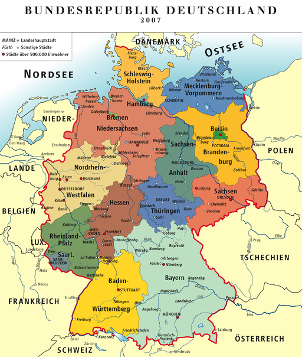The Federal Republic of Germany (German: Bundesrepublik Deutschland) is the most populous country that is wholly in Europe, occupying the north central portion of the continent.
Today it includes 16 states (German: Länder), three of which are “city-states” (Berlin, Hamburg, and Bremen).
Early History
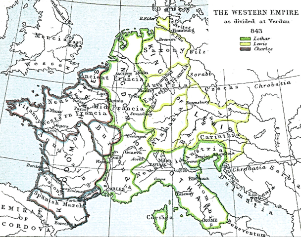- Most of Germany was never under Roman rule.
- Germanic tribes invaded Rome, led to empire's collapse in western Europe.
- Germanic leaders adopted many Roman customs.
- Charlemagne briefly created an empire ruling much of modern France, Germany, and Italy, and had himself crowned as first “Holy Roman Emperor.”
My Three Grandsons
Charlemagne's empire was eventually divided among his three grandsons in 843 A.D.:
- Charles ended up with most of what became modern France.
- Louis ended up with most of modern Germany and Austria.
- Lothair got the bits in the middle: northern Italy, Switzerland, the Netherlands, and land along the Rhine (today called Alsace-Lorraine) that Germany and France have squabbled over ever since.
The Holy Roman Empire
The “Empire” eventually became synonymous with Germany. Emperors often had little authority outside their home kingdom or duchy. Rather than consolidating power, the various territories became more independent over time.
Germany in the 1500s became increasingly divided because of the actions of Martin Luther, a Catholic priest who protested what he saw as the corruption of the Church.
The Protestant faith took hold in many of the northern and eastern states, while Catholicism remained strong in the south and west, particularly in the lands under the control of the Habsburg dynasty.
Wars Over Religion
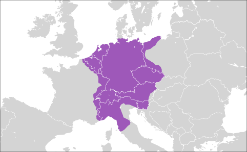Wars broke out across Europe as Catholic rulers attempted to reunite the faith by arms, while Protestant rulers attempted to resist domination by the Catholic Church.
The conflict was particularly vicious in Germany, where Catholic and Protestant territories were intermixed. The rule of cuius regio, eius religio settled the conflict for a time, but renewed conflict led to the Thirty Years War.
The war left Germany fragmented into over 300 states, all of which had effective sovereignty; emperor mostly powerless.
The Rise of Prussia
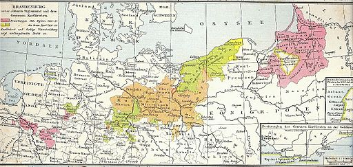The eastern states of Brandenburg and Prussia became unified under one ruler in 1618, and began to acquire territories in Germany and further east, particularly in modern Poland, through war and skillful negotiation, over the next three centuries.
Prussia's aristocracy, the Junkers, were key to expansion. They valued military might, diplomatic skills, and the ability to run large estates worked by serfs.
Napoleon and Nationalism
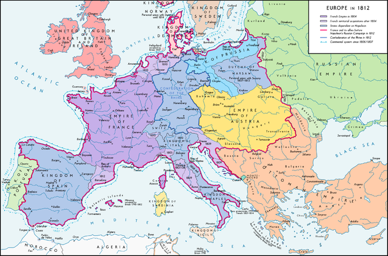The Napoleonic Wars swept across Germany in the early 19th century. Much of Germany was united under Napoleon's Confederation of the Rhine, although this was largely a puppet state under Napoleon's rule.
Napoleon's defeat led to the creation of the German Confederation, a similar arrangement with many of the former territories rationalized; only about 40 states remained of the over 300 that formed the old Holy Roman Empire. A stronger feeling of German nationalism had also emerged.
The Resurgence of Prussia
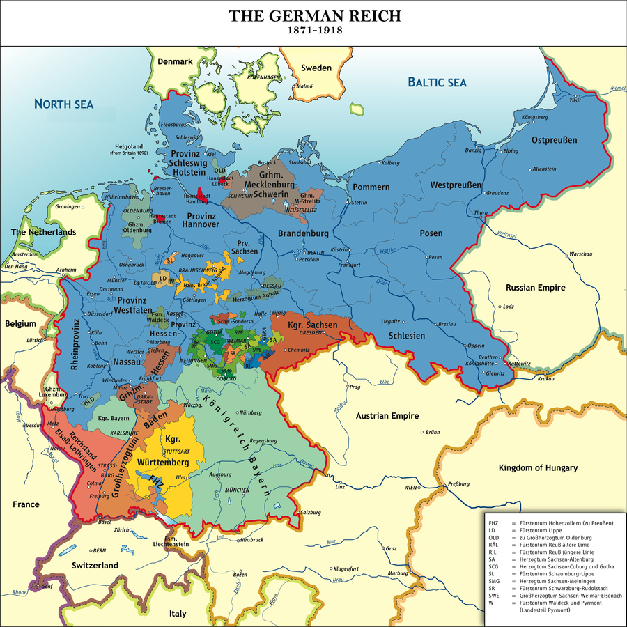Prussia and Austria were the two largest states in the German Confederation. Prussia wanted a Germany without Austria and to be the dominant power.
Through a series of wars, the Prussian chancellor Otto von Bismarck consolidated most of the German territories, except Austria, into the unified German Empire or Reich.
The Second Reich
Unlike Britain and France, Germany did not become fully democratic; instead, the Junker aristocracy and the emperor (Kaiser) ruled, although the Reichstag did have some limited powers.
Bismarck tried to forestall the development of the German SPD (Social Democratic Party) by offering social programs to the working class on his terms, effectively establishing a basic welfare state years before Britain and France did.
Democracy might have emerged gradually as it had in Britain, but war would again intervene.
World War I
The Balance of Power system that had largely kept the peace in Europe collapsed in 1914 with the assassination of Archduke Ferdinand of Austria-Hungary in Sarajevo (modern Bosnia). Germany and its allies in the Central Powers engaged in four years of bloody conflict across the continent.
Impact of World War I
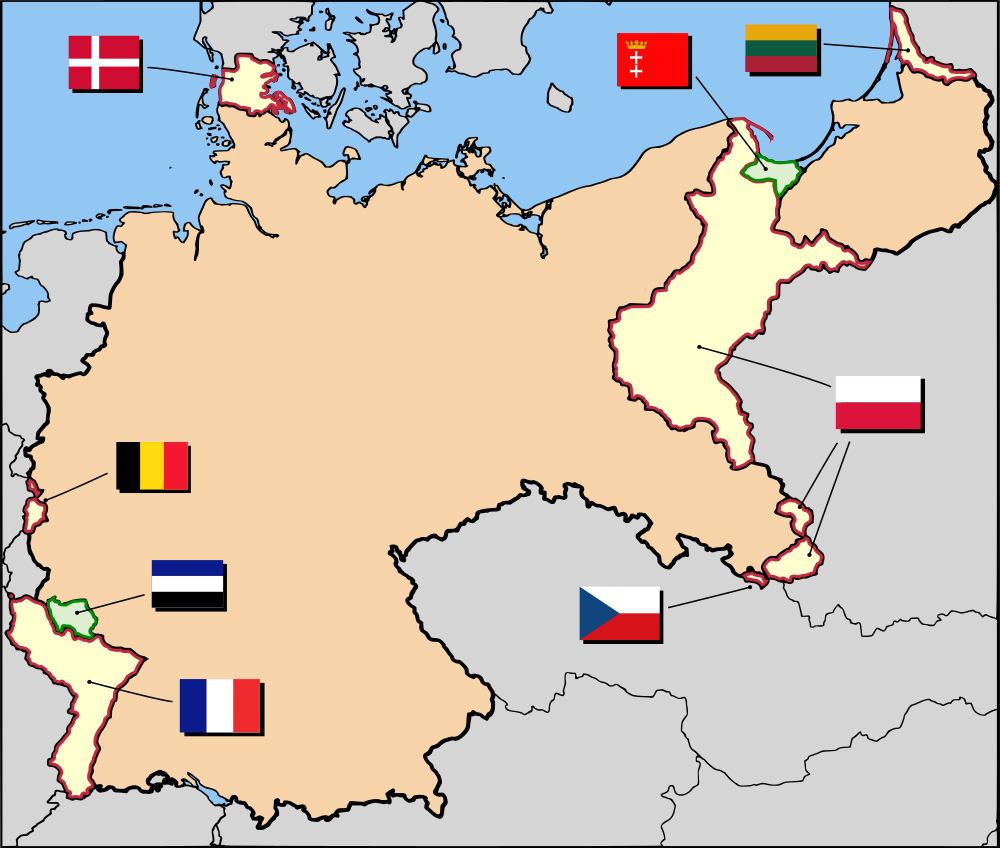The war devastated the German economy and eventually the Kaiser was deposed. Adding insult to injury, the peace settlement at Versailles blamed Germany for the war and demanded huge reparations be paid to the victorious allies, further crippling the economy. Germany also had to give up territory along its borders to the victorious powers.
Dolchstoss and Weimar
The German people were blindsided by the defeat; imperial propaganda had portrayed the war as going much better for Germany than it really was. Many Germans believed they had been betrayed by disloyal Germans, rather than losing on the battlefield.
Germany was left to pick up the pieces and establish a new republican government, the Weimar Republic. Germans had no real experience with democracy and many wanted a return to monarchy—or at least the strong rule they associated with it.
The Rise of Extremism
Although Weimar eventually solved the problem of hyperinflation, the mainstream political parties squabbled and many Germans yearned for strong rule. Many Germans looked to the ideas of German thinker Karl Marx as the answer, and supported a Communist takeover, like what had happened in 1917 in Russia.
Others, who bought the Dolchstoss myth, looked to the far right National Socialist German Workers Party, who combined socialist rhetoric with extreme German nationalism. Unlike the Communists, they also had a charismatic leader: Adolph Hitler. They came to be known as the Nazis.
The Nazi Rise to Power
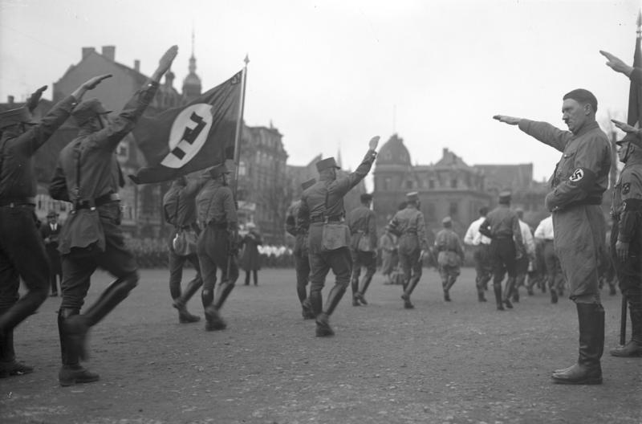In 1933, despite failing to gain a majority of the vote or seats in the Reichstag, Hitler and his supporters successfully conned the leaders of the Center Party into agreeing to hand over all government power to Hitler as chancellor by passing the Enabling Act.
The Nazis quickly used their new power to outlaw other parties, kill Communist Party supporters and leaders, and imprison or drive most of the leaders of the other parties into exile.
World War II
Hitler vowed revenge for Germany's capitulation in the Great War. He began to rearm Germany and worked to expand the Third Reich to take over German-speaking lands that had been lost, and expand into neighboring territories.
By mid-1939, Germany had already conquered Austria and Czechoslovakia without firing a shot. Hitler's invasion of Poland, however, was fiercely resisted by the Poles and their allies Britain and France, leading to open warfare.
World War II
While Germany's military blitzkrieg tactics were successful in conquering most of Europe, as for Napoleon the English Channel and the Russian Winter proved to be insurmountable obstacles. Reversals on the Eastern Front and the Allied invasions of Italy and Normandy rolled back the German gains.
The Occupation
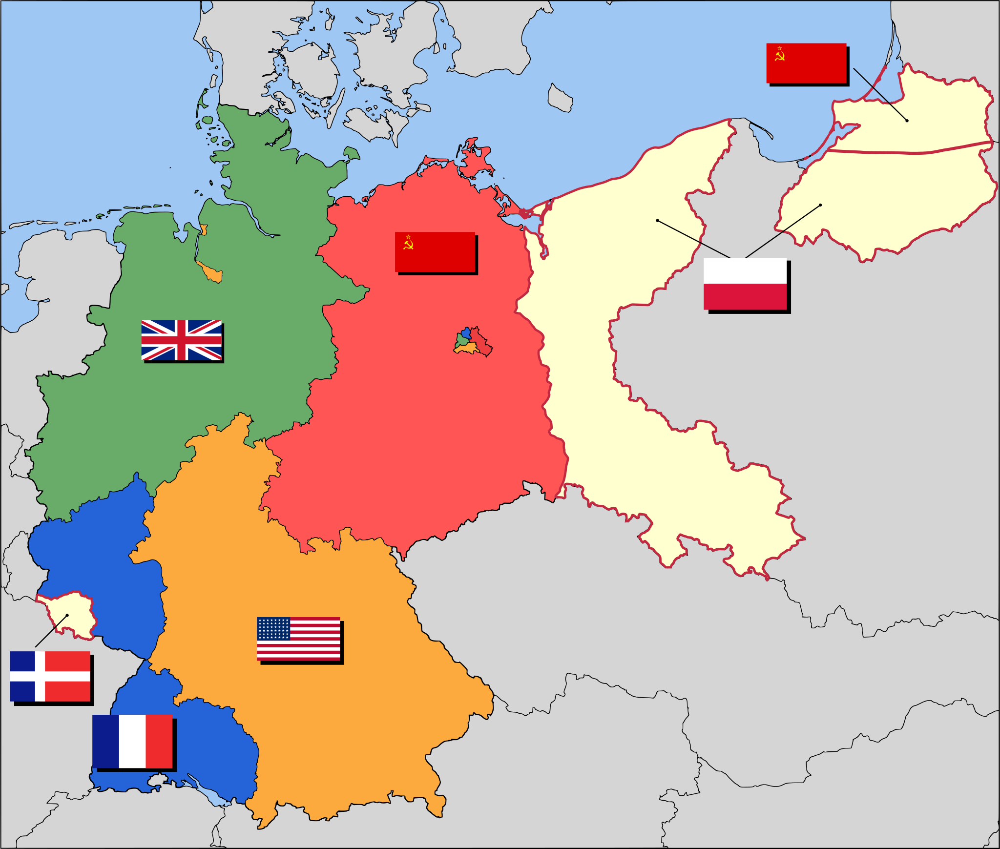Germany again suffered humiliation. Vast territories to the east were given to Poland and the Soviets, including old Prussia itself. Millions of Germans were expelled and forced to move into the new German borders.
Rather than governing itself, Germany was placed under occupation by the four victorious allied powers. New German states were created and placed under American, British, French, and Soviet administration. Berlin was divided between the four powers as well.
The Allies Begin to Disagree
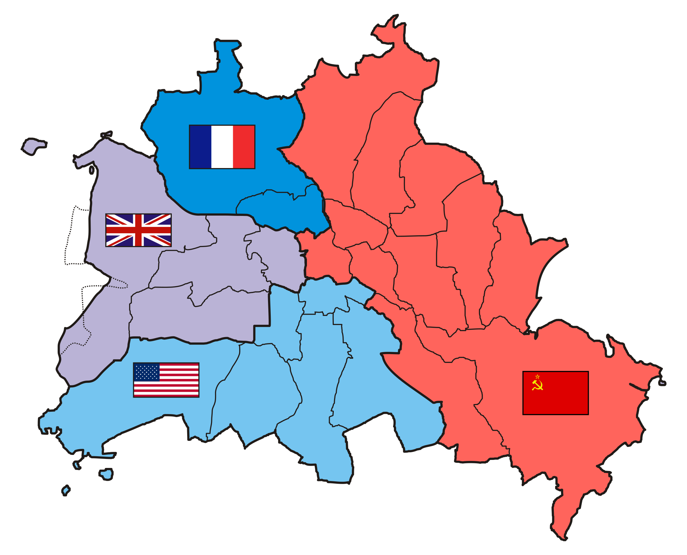Tensions between the Soviets and the western allies began to intensify. The Soviets stopped cooperating with the other allied powers, and attempted to force them out of their zones in Berlin by cutting off road and rail access.
The allied powers also disagreed about what to do about Germany; the Soviets favored keeping Germany weak economically and thus militarily, while the western allies increasingly believed that repairing Germany's economy was the key to economic recovery in all of Europe.
The Split
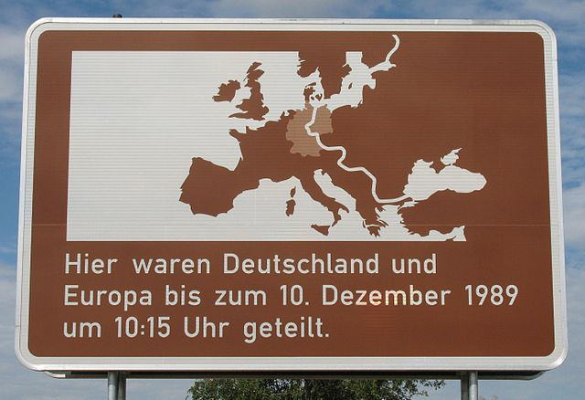The western powers responded to the tensions with the Soviets by increasing their cooperation in their zones, introducing a new currency known as the deutsche Mark and encouraging the leaders of states in their zones to create a single civilian government for those German states not in the Soviet zone.
In 1949, this government was recognized by the allied powers as the Federal Republic of Germany or West Germany. The Soviets promptly set up a similar government in their zones of occupation, including the Soviet sector of Berlin, known as the German Democratic Republic or East Germany.
Germany's Constitution
The basic institutions of West Germany were continued when Germany was reunited in 1990.
The constitution of Germany is known in English as the Basic Law (Grundgesetz).
Germany is a federal state: the 16 German states (Länder) have extensive powers and can have substantially different laws from each other.
However, like Britain, Germany has a parliamentary system of governance, with ministers responsible to the parliament. However, there are differences, because Germany is both federal and a republic rather than a monarchy like the U.K.
The President
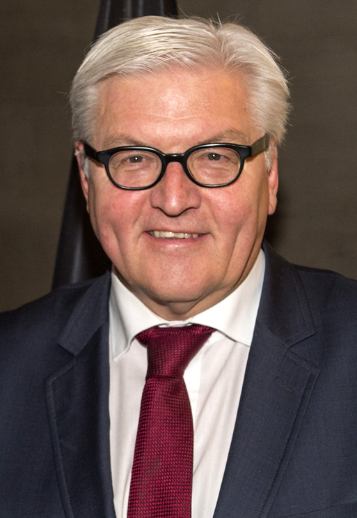The federal president (Bundespräsident) has limited powers and, like the Queen of the United Kingdom, is the head of state.
He or she is typically expected to remain above politics, although German presidents are typically former politicians from one of the leading political parties.
Since March 2017, the president has been Frank-Walter Steinmeier, a former politician and civil servant.
The Chancellor
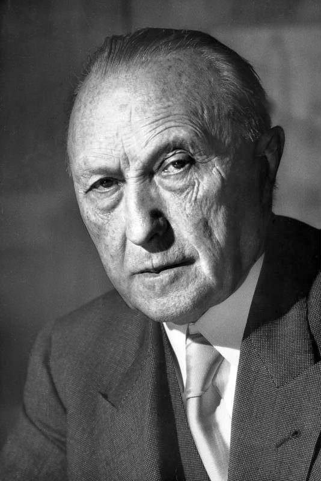The equivalent to the prime minister in Germany is the federal chancellor (Bundeskanzler). Like the British prime minister, the chancellor serves as head of government and is ultimately responsible for the government's performance.
The first post-war chancellor, Konrad Adenauer, who served 14 years, strongly influenced how his successors have governed.
Angela Merkel
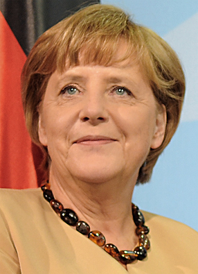The current chancellor is Angela Merkel of the center-right Christian Democratic Union (CDU), who has been in office since 2005. She is the first woman to serve as chancellor, and also the first from the former East Germany.
From 2005–09 and 2013–present, her cabinet has been a result of a grand coalition between the Christian Democrats, the Christian Social Union (CSU), and the Social Democrats (SPD).
From 2009–13, her coalition government included the CDU, CSU, and the Free Democrats (FDP).
Changing Chancellors
Ousting a German chancellor is harder than getting rid of a British prime minister; a constructive vote of no-confidence is required, which means that there must be a nominated new chancellor and cabinet that has majority support before the existing chancellor can be removed.
The Cabinet
German cabinets are comprised of politicians from the coalition parties who serve in the Bundestag, usually in rough proportion with their share of the vote.
Like in Britain, day-to-day government operations are the responsibility of senior bureaucrats; cabinet ministers are usually chosen based on their political importance to their parties, not their expertise.
German Ministries
German cabinets tend to be smaller than those in most other countries.
The most powerful ministry is usually considered to be the Interior Ministry, which oversees the federal law enforcement agencies and the Office for Protection of the Constitution (Verfassungsschutz); the latter monitors extremist and anti-democratic groups, or groups suspected of having those tendencies.
The Bundestag
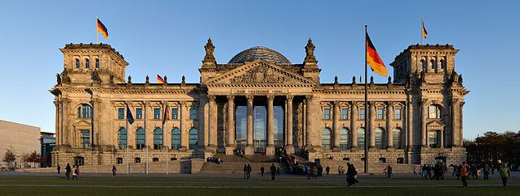The Bundestag is effectively the lower house of the German parliament. Like the British House of Commons, the Bundestag is substantially larger than the U.S. House of Representatives—since reunification, the minimum size of the Bundestag has been 598 members.
Since reunification, the Bundestag has met in Berlin in the rebuilt former Reichstag building.
The Bundestag
Bundestag elections must take place every 46–48 months. The next election must take place by October 24, 2021.
Party discipline in the Bundestag is not quite as strict as in Britain, and committees of the Bundestag take a more active role in reviewing legislation than in the Commons.
The Bundesrat
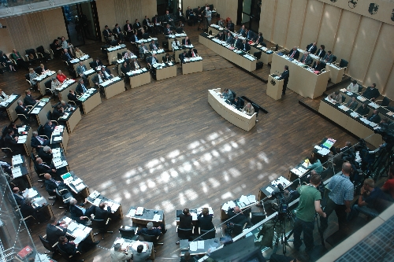The “upper house” of the German parliament is the Bundesrat. The Bundesrat has 68 members, who represent the 16 Länder (each Land has 3–6 members).
The members of the Bundesrat are typically also members of each state's cabinet.
Limits on the Bundesrat
Although each Land has as many votes as they have members, the state's votes must be cast as a bloc. States with coalition governments often must abstain.
Although powerful, the Bundesrat only has authority over certain legislation: budgetary issues and laws that would affect the balance of power between the states and the federal government.
The Constitutional Court
Germany's Federal Constitutional Court (Bundesverfassungsgericht) is also very important politically; like the U.S. Supreme Court, it has the power to consider whether laws passed by the federal or state legislatures comply with the Basic Law.
The Constitutional Court has 16 members, who are divided into two 8-member panels (“Senates”) that consider cases independently to divide the court's workload.
Unlike most of the other institutions of the federal government, which today are based in Berlin, the Constitutional Court meets in the city of Karlsruhe.
Political Parties in Germany
The two most important parties in Germany are:
-
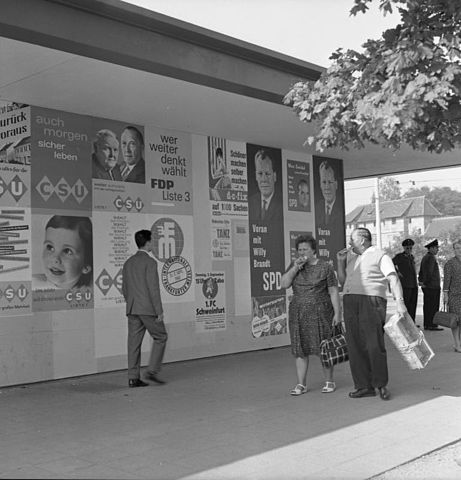
The Christian Democratic Union (CDU) and their sister party, the Christian Social Union in Bavaria (CSU), collectively called the Union parties: center-right.
The Social Democratic Party of Germany (SPD): center-left.
Smaller Parties in Germany
The Left (Die Linke.), a merger of a left-wing offshoot of the SPD with the former East German Socialist Unity Party (SED).
Alliance '90/The Greens (Bündnis 90/Die Grünen).
The Free Democratic Party (FDP), historically a regular coalition partner of the CDU/CSU: free market, socially liberal.
- Alternative for Germany (AfD): Euroskeptic, right wing.
Proportional Representation in Germany
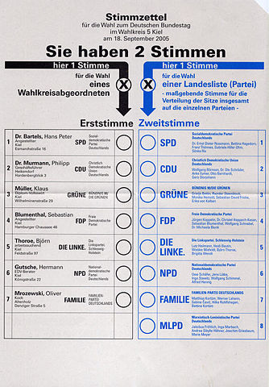Unlike the UK, elections to the Bundestag use mixed-member proportional representation (MMP, also used in New Zealand).
299 members are elected from single-member districts on a winner-takes-all basis using the “first vote.”
Then, at least 299 additional members are chosen from the various Länder from party lists, to ensure each party's seats are proportional to the “second vote.”
More on MMP in Germany
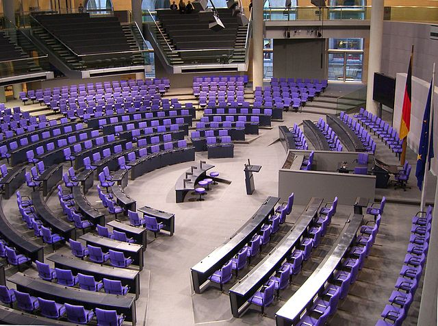Parties must get at least 5% of the party list vote, or win at least one district, to get seats. Earning list seats requires 5% of the vote or winning three or more districts.
In 2013, both the FDP and the AfD fell just short of the 5% threshold, and neither party received seats as a result. Overall nearly 15% of second votes went to parties that didn't win seats.
So while Germany's system is relatively proportional, it still gives some advantage to bigger parties. This is deliberately designed to reduce the risk of extreme multipartism.
Wessis and Ossis
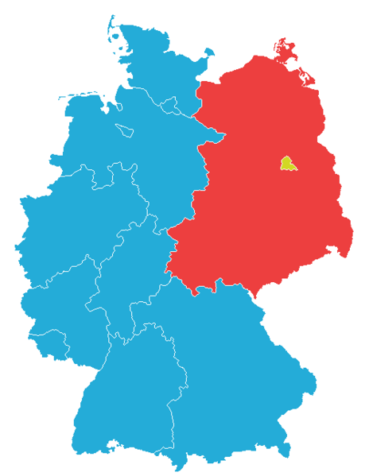Politically and culturally, East and West Germany grew apart during the Cold War. While both sides recovered from the war, the “miracle” in the west was not replicated under Communist rule in the east.
After reunification, the eastern states' economies suffered again as state-run businesses were shut down, privatized, or tried to adapt.
Wessis resented paying to extend Germany's safety net to the east, while Ossis believed the rest of Germany looked down on them.
The Legacy of Nazism
In the west, denazification mostly extended to Nazi leaders and those who been volunteers for the SS. When the Cold War set in, economic recovery was prioritized and the western powers needed experienced people to run West Germany, many of whom were party functionaries.
In the east, the Nazi purge was more complete (since the communists were their bitter enemies); the official ideology treated the Nazis almost like a “foreign power,” so ordinary East Germans were absolved of guilt.
Many Germans, even today, are unsure how to deal with the legacy of Nazism and the role of ordinary Germans in it.
American-Style Campaigns
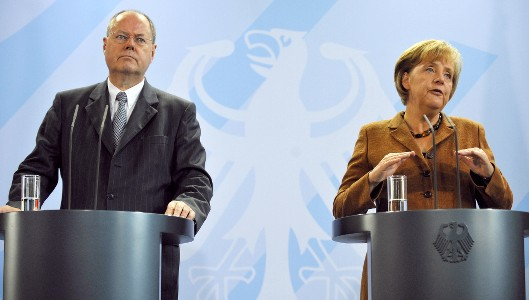Modern political campaigns in Germany—like in Britain—have become increasingly “presidential”; advertising focuses more on party leaders and less on political issues, particularly by the CDU/CSU and SPD.
Televised “American-style debates” have become common in Germany; Britain had its first series of American-style debates in 2010.
German Federalism
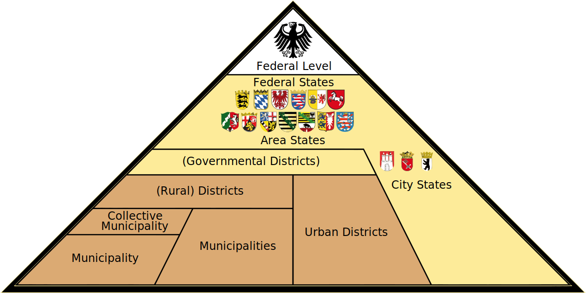Germany's 16 Länder are in many ways under less federal control than their American counterparts; they have more financial resources and more independent authority.
The national authorities have limited leverage over Land policies that they disagree with; further, the Bundesrat makes it harder for the national government to erode state authority than the American system does today.
German Corporatism
During the Cold War era, Germany used a system for managing economic disputes between labor and management that is common in western Europe: corporatism.
Under corporatism, the relationship between business and labor is based on negotiations between the two sides under government supervision. Negotiations are typically by industry rather than business (unlike union-management negotiations in America). The government then enforces the agreement.
In Germany in particular, the law tends to give organized labor a bit more power than in Britain and America today.
The German Economy Today
Like Britain, Germany has wrestled with trying to afford its welfare state. West Germany's businesses were never as weak as Britain's (in part because most were never nationalized), but increased competition has made it harder for Germany to compete in the global marketplace.
Youth unemployment, in particular, is a major challenge; there aren't enough jobs being created, since German companies have turned to automation and off-shoring—including to the United States—to avoid expensive German labor costs.
Europe and the Euro
Although Germans support the European Union much more than Britons do, the loss of the Mark in favor of the euro has been unpopular.
Germans particularly resent paying for bailouts for (what Germans see as) profligate spending by Greece and other eurozone countries (the sovereign debt crisis).
Immigration in Germany
Although the German economy relies heavily on migrant workers, many Germans dislike the idea of permanent immigration, particularly from Turkey.
Like in many countries, people fear new immigrants won't assimilate and become “good Germans.”
Copyright and License
The text and narration of these slides are an original, creative work, Copyright © 2015–18 Christopher N. Lawrence. You may freely use, modify, and redistribute this slideshow under the terms of the Creative Commons Attribution-Share Alike 4.0 International license. To view a copy of this license, visit http://creativecommons.org/licenses/by-sa/4.0/ or send a letter to Creative Commons, 444 Castro Street, Suite 900, Mountain View, California, 94041, USA.
Other elements of these slides are either in the public domain (either originally or due to lapse in copyright), are U.S. government works not subject to copyright, or were licensed under the Creative Commons Attribution-Share Alike license (or a less restrictive license, the Creative Commons Attribution license) by their original creator.
Works Consulted
The following sources were consulted or used in the production of one or more of these slideshows, in addition to various primary source materials generally cited in-place or otherwise obvious from context throughout; previous editions of these works may have also been used. Any errors or omissions remain the sole responsibility of the author.
- Michael G. Roskin. 2013. Countries and Concepts: Politics, Geography, Culture, 12th ed. Upper Saddle River, New Jersey: Pearson.
- Various Wikimedia projects, including the Wikimedia Commons, Wikipedia, and Wikisource.